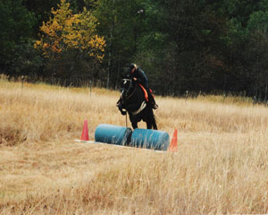
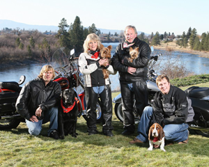
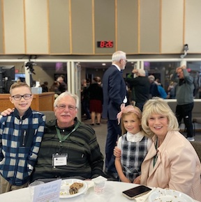
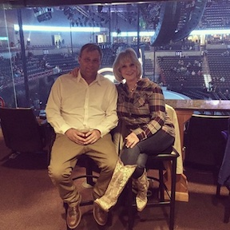
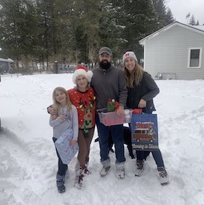
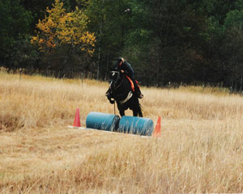
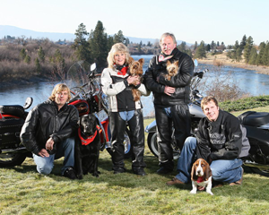
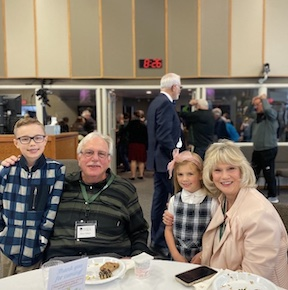
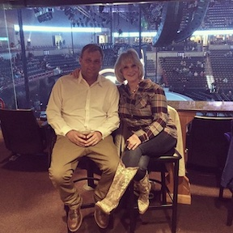
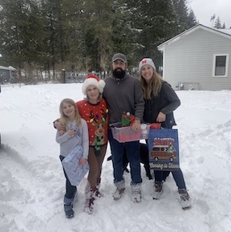

Now more than ever...
If there was ever a time when people need a realtor, it is now!! At this crucial time, in a changing market, people need a hard working, honest, and knowledgeable realtor to help them through this challenging market. At a time when numerous realtors are deciding to try other careers, is the time when Sheri Tilton just digs in her heels and works even harder to fulfill her client's needs and expectations. She is firmly committed to her career in Real Estate, and will continue to be there to listen carefully to you, and will definitely “Go the Extra Mile” to serve your Real Estate needs. Her professionalism and expertise are the difference you cannot afford to be without.
Sheri’s background work history and extreme work ethics have been a huge advantage and a real benefit for her clients. With her 6 years of being a builder, along with working with her husband in excavation, her extensive background in both building and excavation has contributed towards her knowledge and expertise in her real estate career. She has physically been down in the ditches installing numerous drain fields, septic systems, and sewer lines. She can point out the difference of an older 3 tab roof verses an updated architectural roof, explain the difference between an active and passive radon system, and can try to determine on how difficult it may be to add that 3rd bathroom in the basement depending on the location of the plumbing and where the elevation of the septic or sewer line is entering the home if it is even visible. She will normally check out the electrical panel boxes to see if they are a Federal Pacific brand, for they have been recalled, along with the era of when the LP siding had the class action suit.
The excavation background has been a huge benefit for her clients that are looking at raw land with the dream of building their own home. She has a general knowledge of the different types of soil, with the potential types of septic systems they could be up against. She’s always looking for the perfect slope to provide the desirable daylight walk-out basement, and points out to her clients on where the sun rises and sets, so they can determine on how they may want to design their home. Evening shade is perfect for those summer BBQ’s!
 








